Low poly 3D terrain for Godot 4
An editor plugin to paint terrain by hand, or generate it from a seed or from a small pixel image. Ground styles, relief, roads, rivers, dried waterholes, grass, trees and props, biomes, big streamed maps and phone-friendly settings.
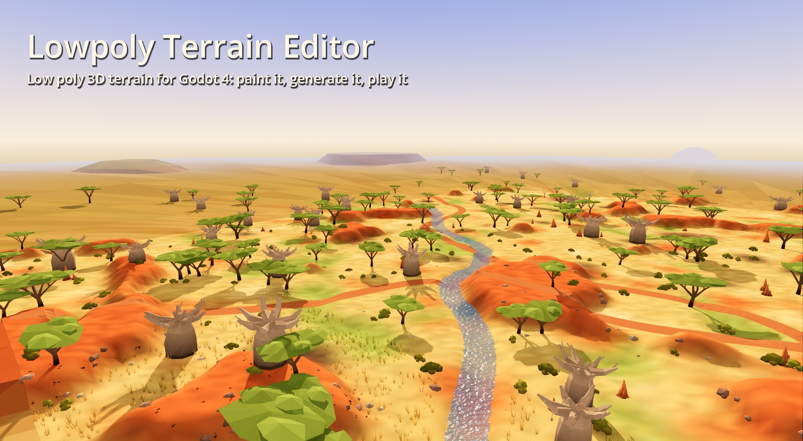
What it does
7 tools
Ground, Relief, Flatten, Road, River, Waterhole and Vegetation, in the 3D editor menu bar. Undo / Redo everywhere.
Generate Map
A whole map from a recipe and a seed: plateaus, lowlands, ground patches, rivers, tracks, waterholes. Same seed, same map.
Pixel maps
One pixel = one terrain cell. Paint 4 colours, or make the map in the Pixel Map Editor.
Biomes
A reusable .tres: ground styles, baked shading, waterhole colours and what grows where, on which ground and slope.
Details
Grass, rocks, trees and props as one MultiMesh per layer and chunk, with wind and tree collision. Your own models too.
Look
Smooth or faceted ground, up to 7 textured ground styles blended, your own ground and detail materials (toon, unshaded...).
In game
Rebuilds over frames, streams big maps around the player, can generate a new map at start, and tells you when the ground is ready.
Phones
Small scenes, water without screen-copy refraction, optional ground shadows, frame-budgeted building.
One generated map
Every shot below is the same map made by Generate Map (Senegal Savanna preset, seed 7, plus one river), untouched. The light comes from the test project: the plugin builds the terrain, each game lights it its own way.
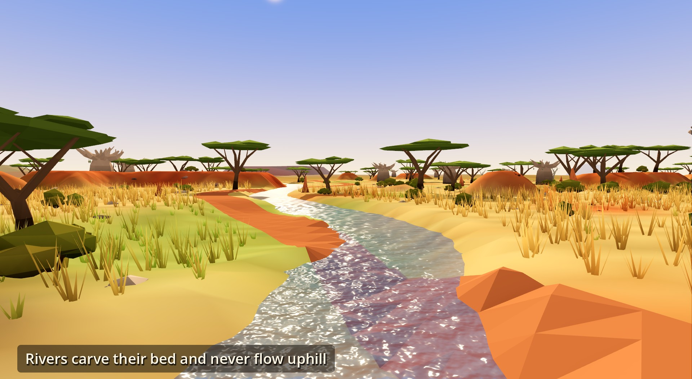
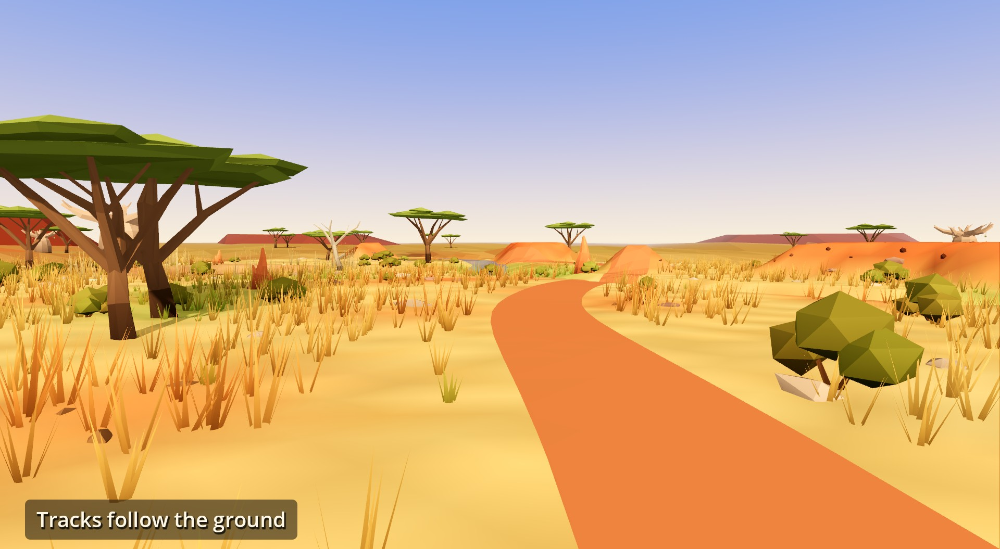
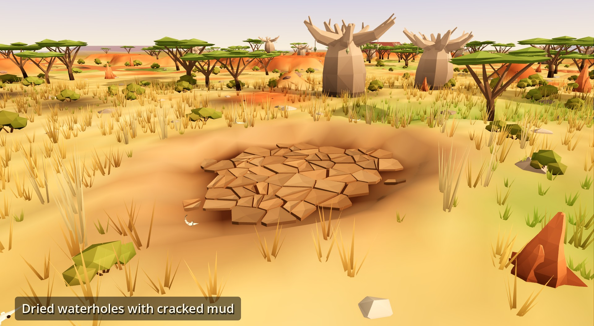
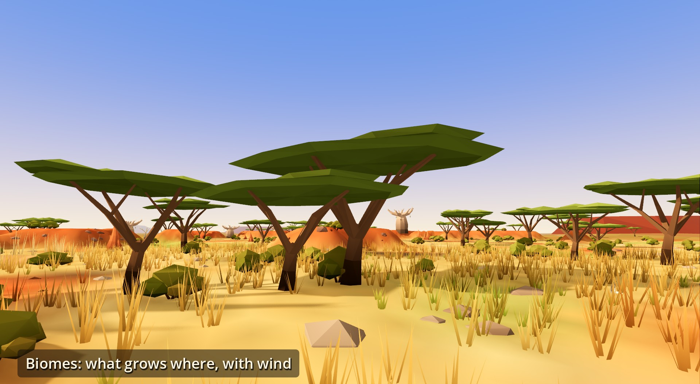
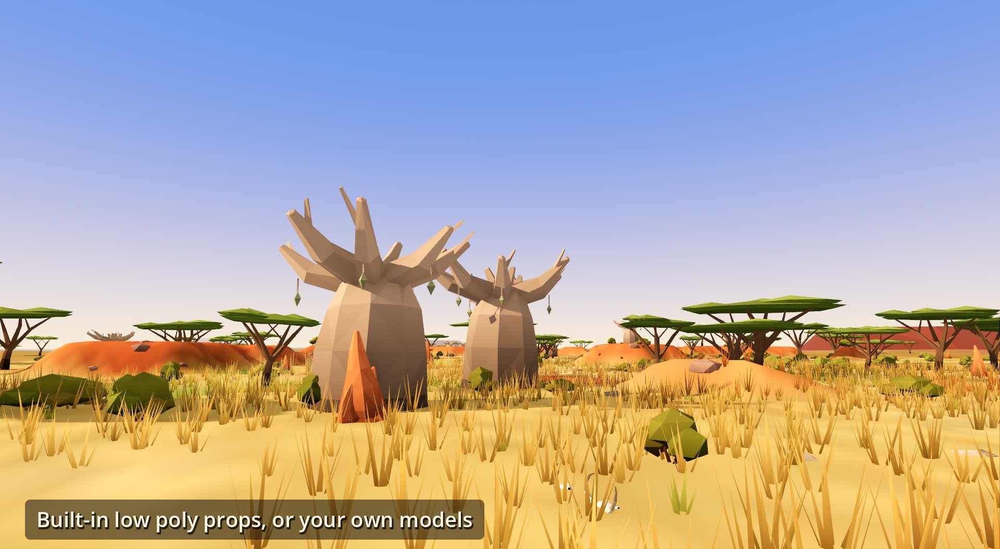
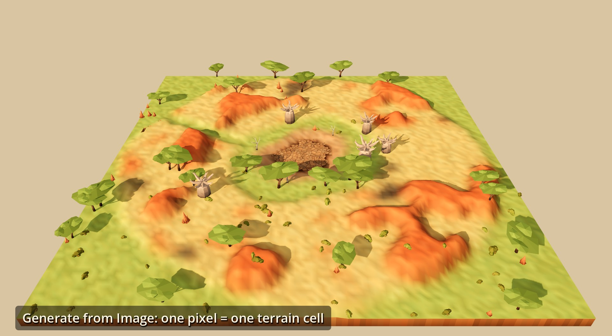
Other biomes
Each on its own Generate Map map: the same recipe with the biome's ground styles and hills closing the border. Temperate is built in; the others are made game side with the biome API.
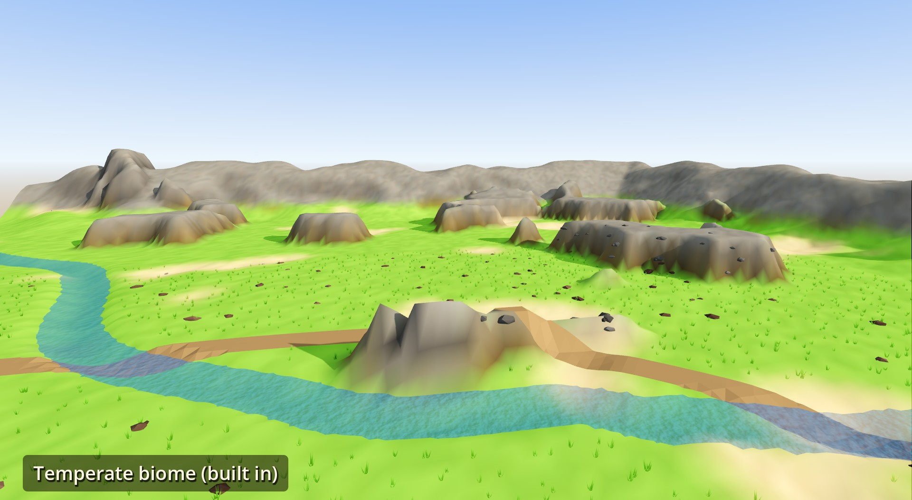
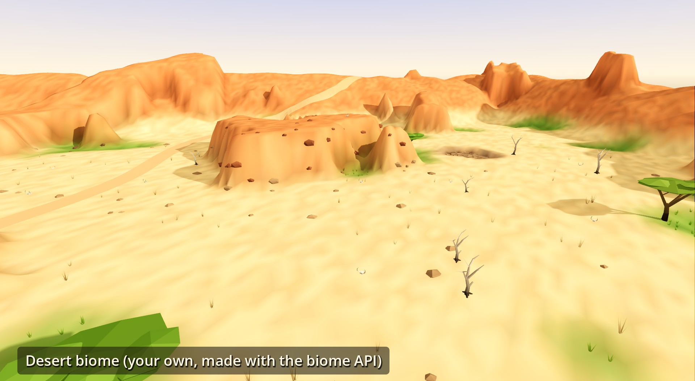
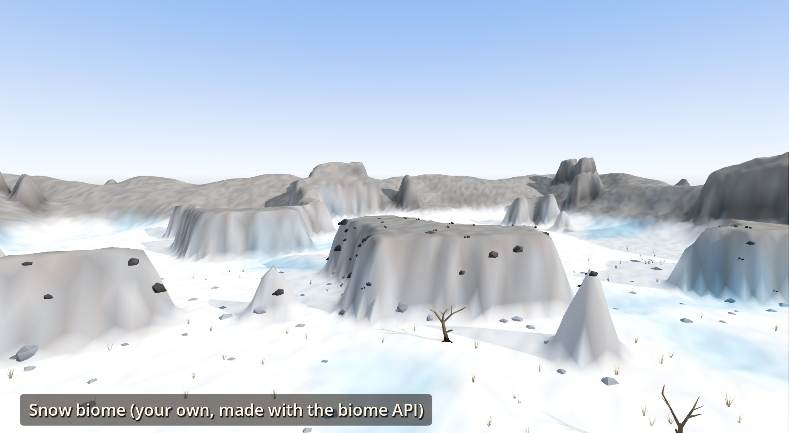
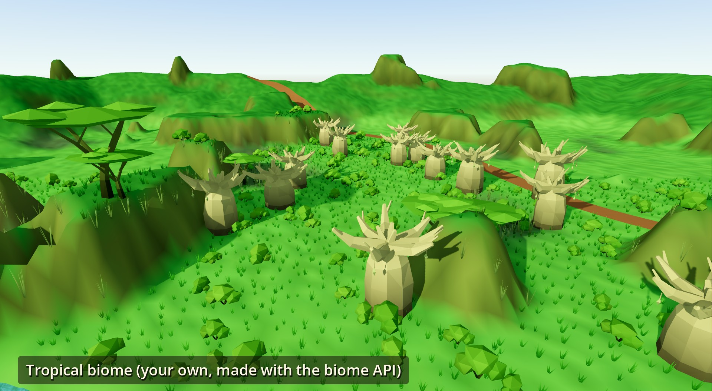
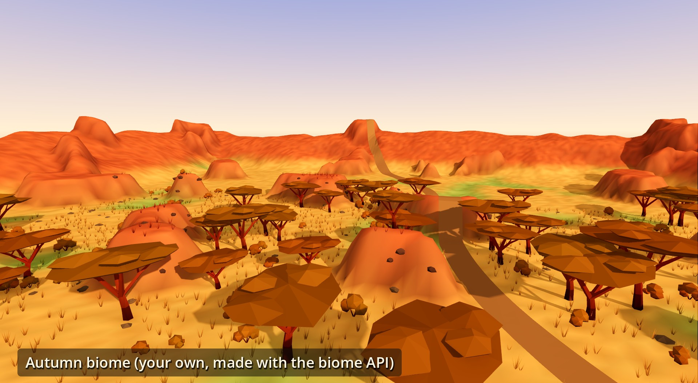
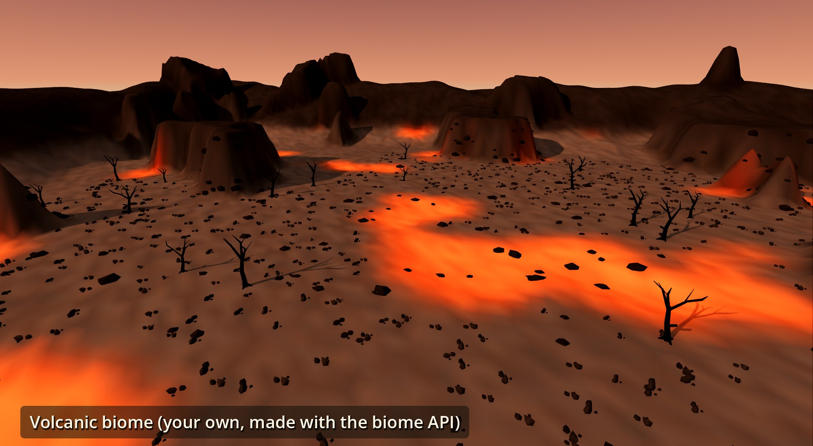
From a pixel map
Paint a small image with 4 colours (or make it in the Pixel Map Editor), drop it in Inspector > Advanced > Pixel Map and click Generate from Image.
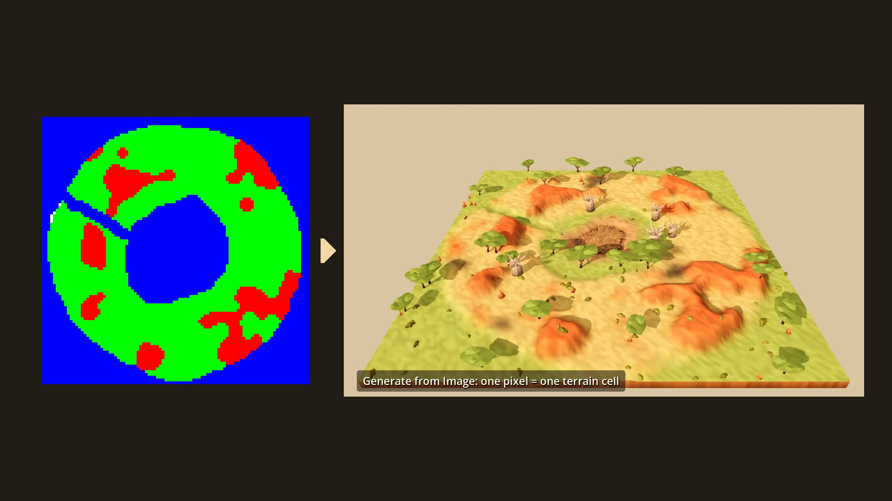
Start in a minute
- Copy
addons/lowpoly_terrain_editorinto your project'saddons/folder. - Project > Project Settings > Plugins: enable Lowpoly Terrain Editor.
- Open a 3D scene, click New Terrain in the 3D editor menu bar, then drag in the 3D view or click Generate Map in the Inspector.
Godot 4.7 (developed and tested with 4.7.2). Forward+, Mobile and Compatibility renderers. Everything else is in the guide.